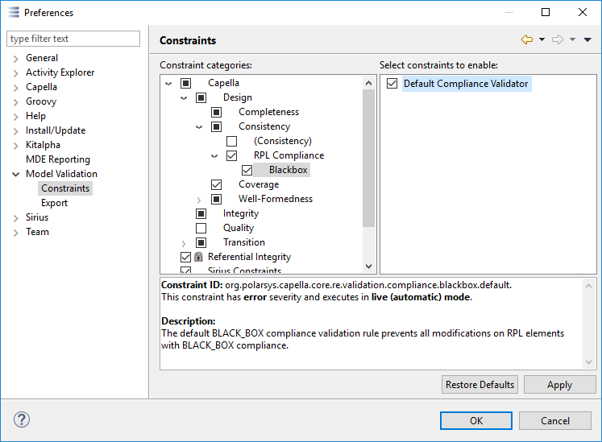
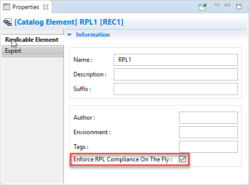

Different kinds of conformance are possible between a RPL and its REC. Capella defines three default kinds of conformance, but end-user can define their own ones.
Capella currently provides a validation rule for RPL with Blackbox compliance. In live validation mode, the rule prevents all non REC conformant modifications on a RPL, with the exception that it is allowed to add realization links to RPL elements. In batch mode the rule verifies Blackbox compliance partially by checking that no external content was added to any of the validated RPLs elements (with the above mentioned exception for realization links). To verify if required RPL elements have been changed or deleted, use the REC/RPL conformance check DCON_02. Note that the validation rule is by default disabled. It can be enabled in the Capella preferences:

If a Blackbox validation rule is active, live validation will occur on all RPL which have the 'Enfore RPL Compliance on the Fly' flag checked in its properties. This flag makes it possible to enable validation for specific RPL only:

If the live validation detects a violating change, the change is rolled back and an error dialog will open, indicating which changes were not in line with the current compliancy setting of the RPL.
Validation rules for the other two Compliance definitions of the RPL are not available yet